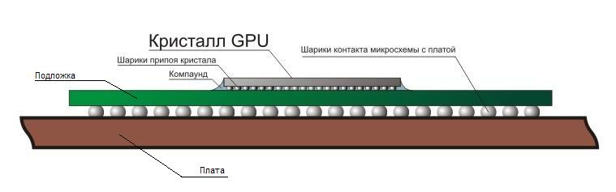

Почему чип нужно менять на новый
В статье
«BGA монтаж, дефекты и методы устранения» были рассмотрены причины возникновения и методы устранения такого дефекта как отвал, непропай, холодные трещины в пайке BGA.
Реболл старого чипа – как метод устранения такого дефекта, далеко не всегда является решением проблемы отвала чипа. Даже не смотря на то, что ноутбук после реболла вновь начинает работать, эффект этот кратковременен, устройство работает 1-3 месяца и повторно выходит из строя и уже для настоящего ремонта чип нужно все же менять на новый.
Давайте разберемся, почему так происходит. Для начала необходимо рассмотреть внутренне строение чипа.
Чип состоит из кристалла, в котором реализована вся «начинка» и подложки из текстолита, на которую устанавливается кристалл. По периметру кристалл заливают удерживающим компаундом, а сверху оставляю голым, либо же закрывают металлическим теплосъемником или пластиковым корпусом. Электрически кристалл и подложка соединяются массивом шаров из припоя – BGA. Таким образом, мы видим, что установленный на плату чип, представляет собой «бутерброд»: плата – BGA – подложка – BGA – кристалл.

Именно в такой структуре и кроется подводный камень. Если проблема отвала BGA находится на уровне плата – подложка, то действительно, реболл – это действенный и осуществимый метод ремонта, но если же нарушение пайки произошло на уровне подложка – кристалл, то чип нужно менять на новый.
Менять необходимо по нескольким причинам. Компаунд, удерживающий кристалл на подложке, очень устойчив к механическому воздействию, действию агрессивных сред, удалить его не повредив хрупкий кристалл не представляется возможным, а даже если бы это было осуществимо, отреболить непосредственно кристалл так же задача не тривиальная т.к. если диаметр шаров между чипом и платой составляет 0,3 – 0,6 мм, то диаметр шаров между кристаллом и подложкой составляет уже не десятые, а сотые миллиметра, только себестоимость работы в таком случае уже будет граничить со стоимостью нового чипа.
Каким же образом определить на каком уровне произошло разрушение? Как было уже рассмотрено в статье «BGA монтаж, дефекты и методы устранения» можно визуально, с помощью специально оптического оборудования, так же есть рентгеновские установки для определения скрытых дефектов пайки, однако такое оборудование ввиду его стоимости ставится только на линиях производства для выходного контроля качества.
На уровне сервисного центра можно поступать двумя способами. Первый - самый надежный и правильный, только замена на новый чип, но тогда стоимость ремонта возрастает за счет стоимости нового чипа, к сожалению, не все могут или хотят себе такое позволить. Второй – опираться на статистику. Если, для конкретной модели чипа, наблюдается большое количество повторных отказов, в краткий промежуток времени, то можно сделать вывод, что такой чип нужно только менять, например чипы NVidia были проблемными, серии чипсетов NForce, видеокарт 8400 – 8600 и др. Как правило, сервисный центр предлагает оба варианта устранения проблемы, клиент уже сам принимает решение, что ему больше подходит.